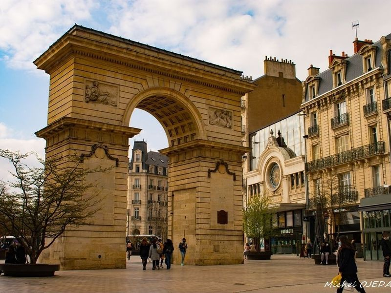
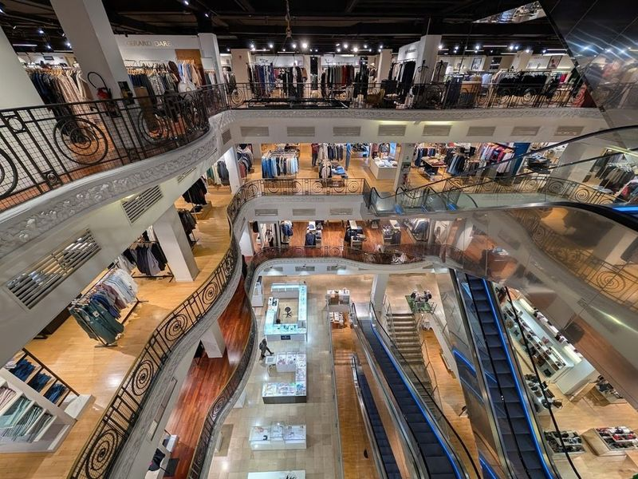
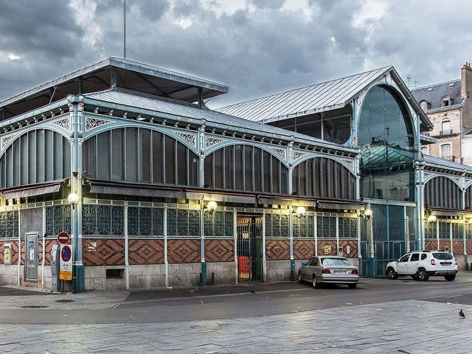
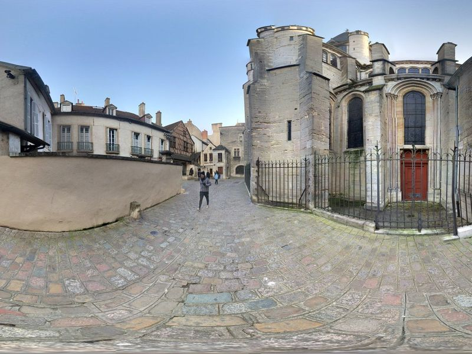
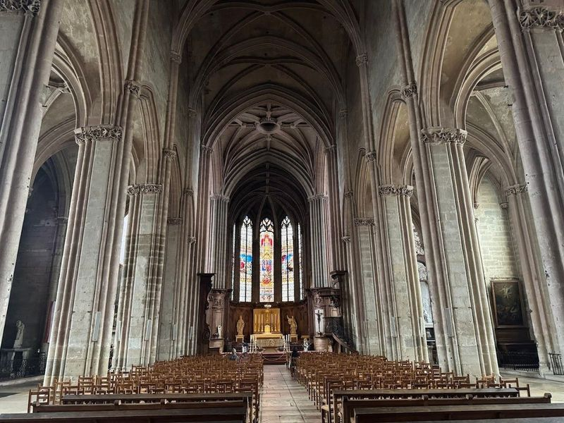
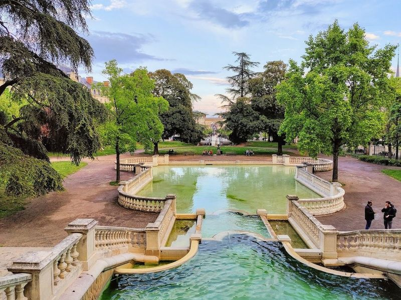
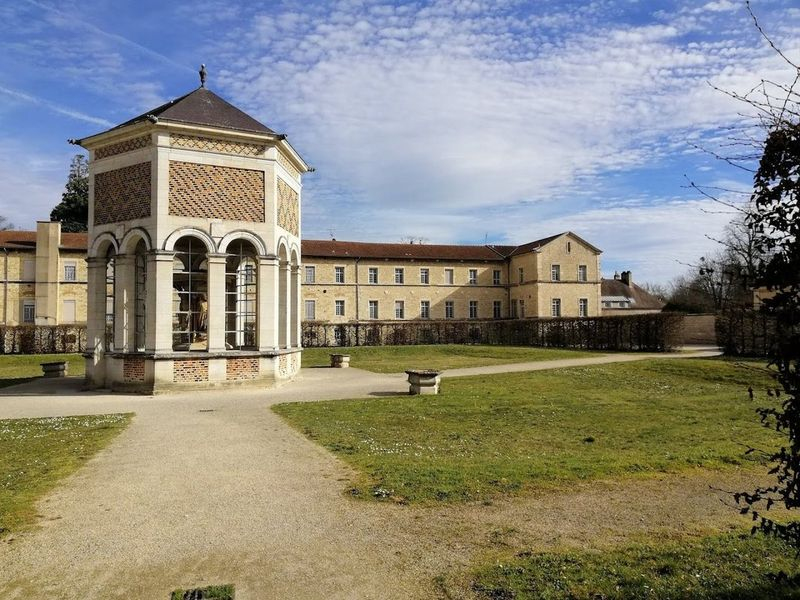
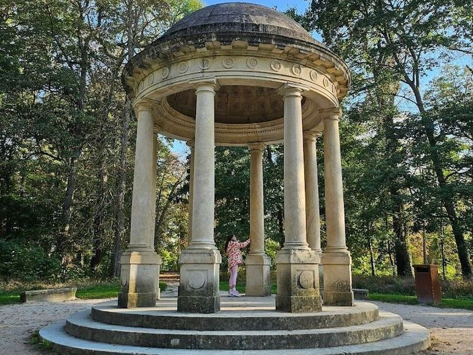
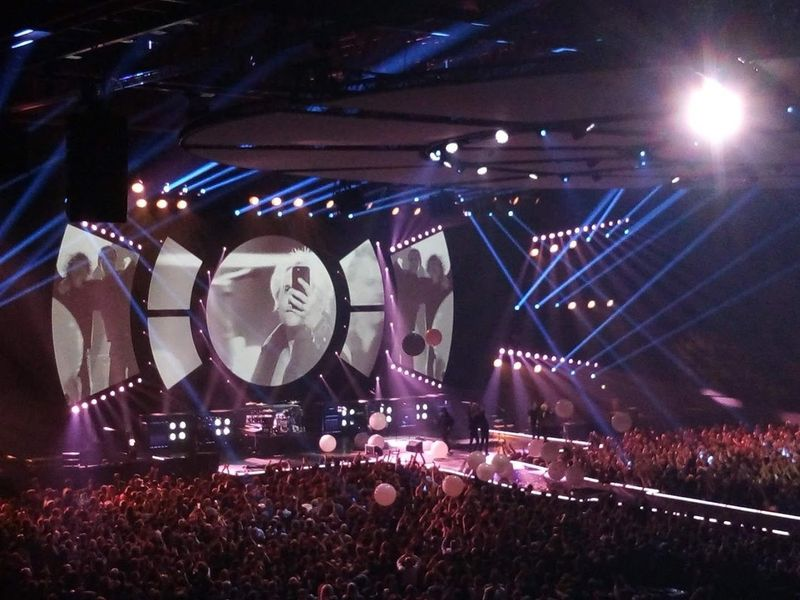
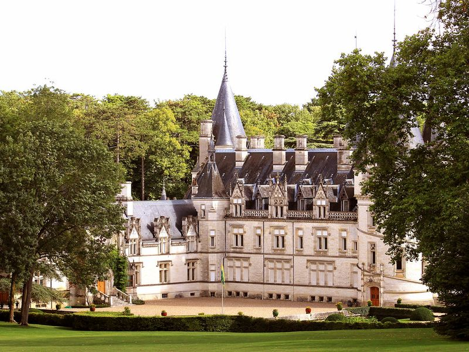

Explore Dijon
A Brief History
Dijon was seat of the Valois dukes of Burgundy, whose fourteenth- and fifteenth-century patronage left the palace, Chartreuse de Champmol, and sculpted tombs that drew Flemish and Italian artists. The city controlled wine routes from the Côte d'Or and hosted a parliament after annexation by France in 1477. Half-timbered houses, the Church of Notre-Dame, and mustard and cassis commerce still express how a ducal capital became a regional administrative and gastronomic centre.
Attractions Map
Top Sights & Activities

Porte Guillaume
The William Gate is a monumental gateway from the 1700s that features stone arches with allegorical relief sculptures. It is located in the center of Dijon's main shopping district, Parc Darcy, and can be seen from all sides of the square. The gate is a popular photo spot for locals and tourists alike, and is one of the city's most visited landmarks.

BHV Dijon
Galeries Lafayette in Dijon offers a delightful shopping experience, from the grand department store to individual boutiques. The mall is divided into three main sections: the Galleria for women, the Galleria for men, and a building dedicated to food and gourmet cooking. Each section has its own unique charm, with the food building also hosting a market on its lowest floor. travellers shouldn't miss the old stained glass dome at the center of the store or the vintage elevators.

Halles centrales et marché central
The Halles centrales et marché central in Dijon is a hub of local culture and gastronomy, used for food lovers and those seeking authentic experiences. This beautifully restored market hall buzzes with activity, featuring an array of vendors offering everything from fresh produce to artisanal cheeses and exquisite wines. Open on Tuesday, Friday, and Saturday mornings, the market invites travellers to explore its diverse offerings while soaking up the lively atmosphere.

The Owl of Dijon
on the exterior of the Eglise Notre-Dame in Dijon, the Owl of Dijon (La Chouette de Dijon) is a stone sculpture that has captured the hearts of locals and travellers alike. This small yet significant owl is not just an artistic feature; it’s believed to grant wishes when gently stroked, making it a must-visit for those seeking a bit of magic during their travels.

Saint Michael's Church
Saint Michael's Church, a 16th-century Gothic masterpiece located near the Ducal Palace in Dijon, is a must-visit for its impressive architecture and historical significance. The church boasts an intricate facade adorned with religious and secular carvings, housing remarkable paintings by Franz Kraus. With its towering presence and stained-glass windows, Saint Michael's Church offers travellers a serene and captivating experience that leaves a lasting impression.

Darcy Garden
Darcy Garden is a historic and picturesque public park In Dijon, France. Built on a reservoir, this 19th-century neo-Renaissance garden offers travellers a tranquil oasis with its lush greenery, seasonal flowers, and fountain cascading into an oval basin. The park features the famous Polar Bear in its Stride sculpture by local artist Francois Pompon, as well as other sculptures and numerous benches for relaxation.

Puits de Moïse
The Well of Moses is a remarkable medieval sculpture created by Dutch artist Claus Sluter, located at the Charterhouse of Champmol in Dijon. This masterpiece, along with six other lifelike statues of prophets also crafted by Sluter, stands as one of the few remaining elements of the medieval monastery. travellers can admire this work in the ancient monastery and explore its historical significance.

Colombière Park
Colombière Park is a vast historical site with French-style gardens and tree-lined walkways, where travellers can also explore the remains of ancient Roman roads. It's an public space for relaxation, especially for families with kids who will appreciate its small zoo, playgrounds, rope climbs, and tree fort. However, travellers are advised to check the opening hours as they may vary.

Zenith Dijon
Zenith Dijon is a modern live music venue with a cavernous space that can accommodate up to 9000 people. Since its opening in 2005, it has become a hub for various entertainment events including pop and rock concerts, stand-up comedy, musicals, shows, and conventions. The venue offers state-of-the-art facilities and is conveniently located near the center of Dijon, easily accessible by tram.

Pouilly Castle Park
The site is catalogued as a castle. The site is catalogued as a castle. The site is catalogued as a castle. Pouilly Castle Park is listed among principal sites for Dijon within France. Municipal and regional heritage listings document its place in the historic centre and travellers routes through Dijon.